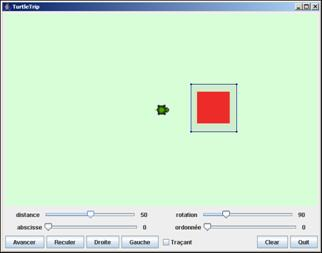
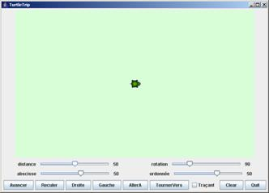
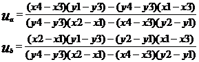

Approche Orientée Objet
L'objectif de ce travail est de compléter
l'application Turtle. Dans sa première version la tortue est capable d'avancer,
de reculer, de tourner à droite ou à gauche. On souhaite faire évoluer cette
spécification pour l’adapter ou l’enrichir. Ce travail doit permettre de
maîtriser la modification de classes existantes, la compréhension et la mise en
place d’assertion caractérisant les contrats entre objets. Il doit aussi
permettre de réaliser des algorithmes simples.
Utilisez l’application Turtle pour comprendre son
fonctionnement. Cette application modélise la tortue LOGO capable d’effectuer
des déplacements sur une surface plane en pouvant effectuer des tracés. Cette
application est constituée d’un espace visible de l’espace de dessin où évolue
la tortue et d’un panneau de contrôle permettant d’opérer sur la tortue.
L’espace peut recueillir des figures qui seront affichées si elles font partie
de l’espace de visibilité. Celles-ci sont réparties en trois catégories :
les figures présentent de façon permanente et qui ne sont pas effacées par la
commande « Clear », les figures standards qui sont effacées par la
commande « Clear » et les figures temporaires qui ne restent visibles
que le temps de l’interaction les concernant. Les Sliders permettent de fixer
les valeurs des paramètres des commandes qui en ont besoin.
Actuellement l’espace de déplacement de la tortue
est infini, mais seule une fenêtre restreinte de cet espace est visible. La
tortue peut donc sortir de l’espace visible puis y rentrer à nouveau. Pour améliorer cette situation, nous
disposons de plusieurs solutions : la première consiste à rendre visible
l’ensemble de l’espace en permettant de déplacer la fenêtre de visibilité sur
l’espace, une seconde consiste à considérer que l’espace est borné et que toute
tentative de sortie de cet espace est impossible en bloquant la tortue à la
frontière de l’espace de visibilité, la troisième est de considérer que toute
tentative de rejoindre un lieu en dehors de la fenêtre de visibilité est
interdite et se solde par un échec.
On souhaite positionner dans
l’espace de déplacement des obstacles qui pourront altérer les déplacements de
la tortue (on par de l’objectif précédent). Pour cela on vous propose un
canevas de la classe Obstacle qui représente un rectangle (cadre) dans l’espace
de visibilité. Lorsque la tortue rencontre un tel obstacle elle bute sur
celui-ci, ce qui interrompt sa trajectoire. La tortue est représentée par un carré
de 32 pixels de côté. On admettra dans un premier temps que la construction
d’un obstacle est correcte : il n’est pas positionné sur la tortue. L’espace
inaccessible à la plume de la tortue est constitué du cadre de l’obstacle
élargi par une bande dont la largeur est égale au rayon du cercle circonscrit à
l’image de celle-ci.
Compléter les classes à votre disposition (Turtle, Obstacle)
pour que l’on puisse mettre en place plusieurs obstacles dans l’espace de
visibilité et que le comportement de la tortue corresponde à celui décrit ci-dessus.
Pour cela vous utiliserez un tableau d’obstacles, on admettra qu’il ne peut
y avoir plus de 10 obstacles simultanément dans l’espace de visibilité. On
dispose d’une interaction utilisateur permettant de positionner un obstacle
dans l’espace de visibilité en cliquant dans celui-ci puis en fixant la
diagonale du rectangle souhaité.
La trajectoire initialement prévue pour la tortue
peut être interrompue prématurément lorsqu’elle rencontre un obstacle. Une
solution pour résoudre ce problème consiste à calculer pour chaque obstacle le
vecteur maximal que l’on peut parcourir sur la trajectoire initiale sans
rencontrer cet obstacle.
Pour déterminer si la trajectoire initiale coupe un
obstacle et quel est le premier point d’intersection, on propose de considérer
que ceci revient calculer l’intersection de la trajectoire initiale avec les 4
segments constituants le cadre de l’obstacle.
Vous disposez en annexe du système d’équations à
résoudre pour déterminer le point d’intersection de 2 segments.
On souhaite désormais que la
tortue dispose d'un repère lui permettant de se situer dans l'espace. Elle sera
dotée de 2 fonctionnalités supplémentaires qui lui permettront respectivement
de se placer à un point précis de l'espace (allerA) et de s'orienter dans une
direction précise (tournerVers). Dans les mêmes conditions que l’objectif 2
ajoutez ces 2 fonctionnalités à la tortue. Il vous faut ajouter 2 boutons
supplémentaires dans l’interface pour les rendre accessible à l’utilisateur.
Cette interface a été construite avec un builder d’interface, en l’occurrence
VE qui est un plugin d’Eclipse. Vous pouvez soir rééditer la classe TurtleTrip
avec cet éditeur, soit ajoutez le code nécessaire par similitude au code produit
pour les autres boutons (avancer par exemple).
Modifiez les classes Turtle et TurtleTrip en
conséquence.
On souhaite faire cohabiter plusieurs tortues dans
le même espace de visibilité Une tortue n’est pas un obstacle pour les autres
tortues.
Comment faire pour différencier visuellement les
tortues ?
Comment faire pour désigner la tortue concernée par
une opération ?
Mettez en place la solution que vous avez imaginée.
La documentation des classes nécessaires :
Les sources des classes
utiles : Source.zip
Les librairies des classes
nécessaires :
Written by Paul Bourke
April 1989
This note describes the
technique and algorithm for determining the intersection point of two lines (or
line segments) in 2 dimensions.
The equations of the lines
are
Pa = P1 + ua ( P2
- P1 )
Pb = P3 + ub ( P4 - P3
)
Solving for the point where
Pa = Pb gives the following two equations
in two unknowns (ua and ub)
x1 + ua (x2 - x1) = x3 + ub (x4 - x3) and y1 + ua (y2 - y1) = y3 + ub (y4 - y3)
Solving gives the following
expressions for ua and ub

Substituting either of
these into the corresponding equation for the line gives the intersection
point. For example the intersection point (x,y) is
x = x1 + ua (x2 - x1)
y = y1 + ua (y2 - y1)
Notes: